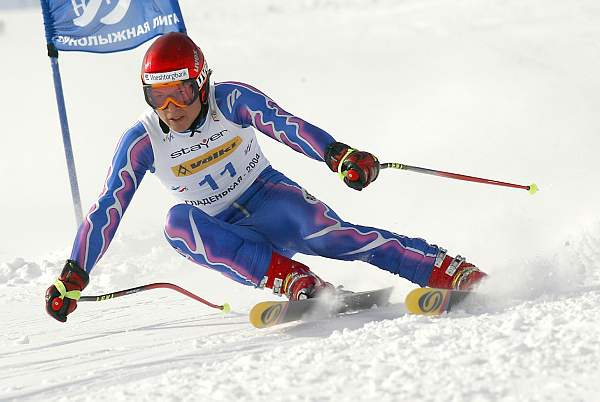
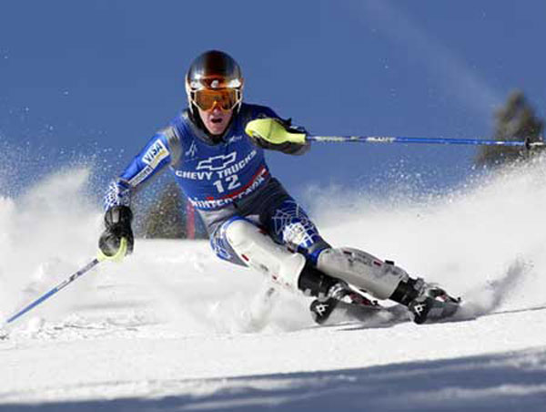
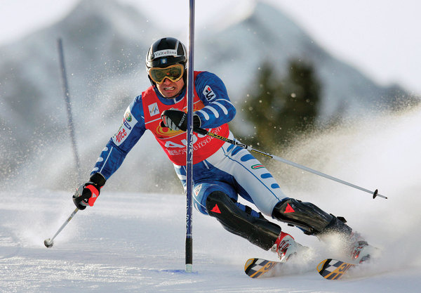
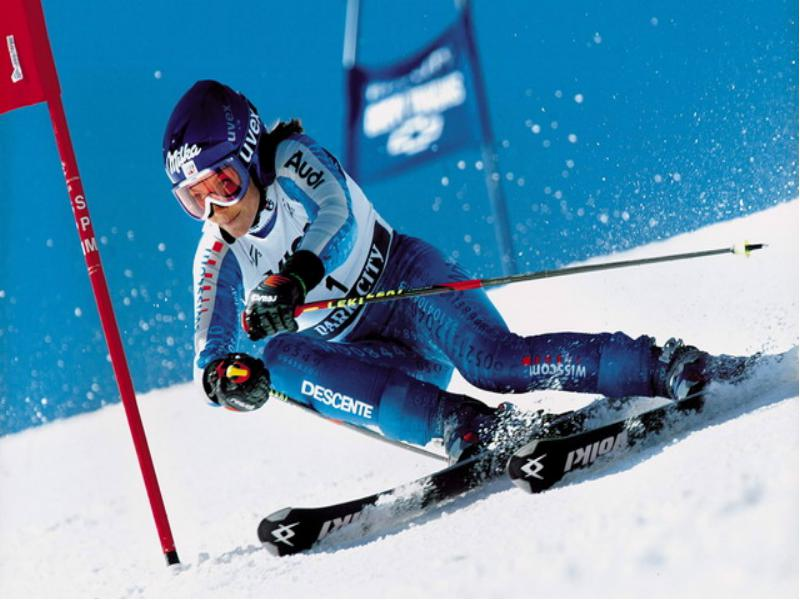
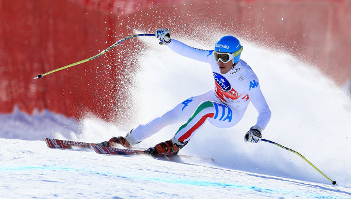

Горнолыжный спорт
Один из самых опасных видов спорта, включенных в программу зимней олимпиады. По сути, является скоростным спуском на лыжах с горы. Тем не менее, горнолыжный спорт – собирательное понятие, включающее в себя несколько олимпийских дисциплин.
Скоростной спуск. Название дисциплины соответствует сути. С горы, перепад высот которой должен составлять до 800 м для женщин и 1100 м для мужчин, происходит спуск на высокой скорости, которая на отдельных участках трассы составляет около 150 км/ч.
Спортсмены должны проходить через специальные ворота, обозначенные флажками. Победителем становится тот, кто покажет лучшее время по итогам одной или двух попыток. Чаще всего, для выявления победителя используется одна попытка. Два заезда происходят в том случае, если трасса не соответствует условиям перепада высот. Скоростной спуск является одним из самых травматичных видов спорта.
Гигантский слалом. Слалом отличается от скоростного спуска меньшим перепадом высот (до 300 м), и большим количеством резких поворотов, которые отмечаются специальными воротами. Ширина ворот колеблется от 4 до 8 метров. Соревнования проводятся в две попытки. На первом этапе спортсмены делятся на две группы и по очереди проходят дистанцию. Во вторую попытку попадают 30 лучших по итогам первой, при этом их старт на втором этапе происходит в обратном порядке. Спортсмен, выигравший первую попытку, выйдет на старт второго этапа последним. Победителем становится тот, кто показал меньшее время по итогам двух попыток.
Слалом. От гигантского слалома эта дисциплина отличается меньшей длиной трассы, меньшим перепадом высот (до 150 м), и меньшей скоростью. В остальном отличий от гигантского слалома нет.
Супергигант. Третье звено в эволюции слалома. Соревнования проводятся в формате трассе для горнолыжного спуска. Перепад высот должен составлять 600 м. Ворота для прохождения поворотов шире, чем в супергиганте.
Горнолыжная комбинация. Так называемое горнолыжное двоеборье.
Данный подвид горнолыжного спорта включает два этапа:
- заезд на трассе для слалома;
- скоростной спуск или супергигант.
Оба этапа проводятся в один день. Победитель определяется согласно суммарно меньшему времени, показанному на этих двух этапах.
Традиционно фаворитами в горнолыжном спорте являются австрийцы, немцы и американцы. Горнолыжный спорт исторически одна из самых скудных на медали олимпийских дисциплин для российских спортсменов.
{kind=link}
{kind=link}
{kind=link}
{kind=link}
{kind=link}